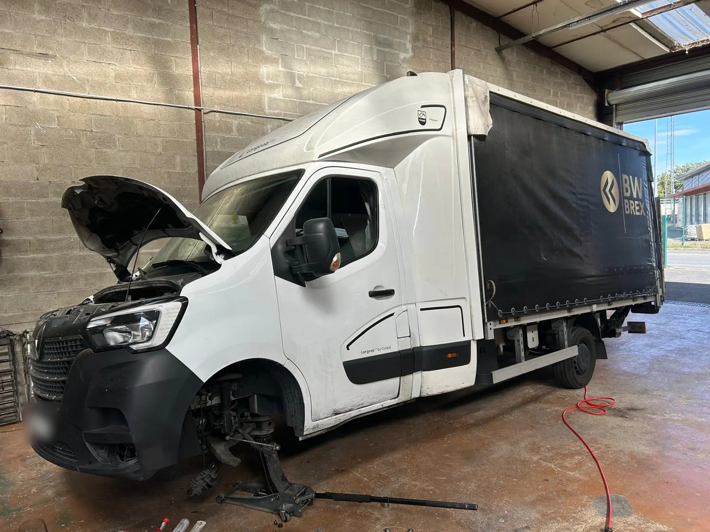
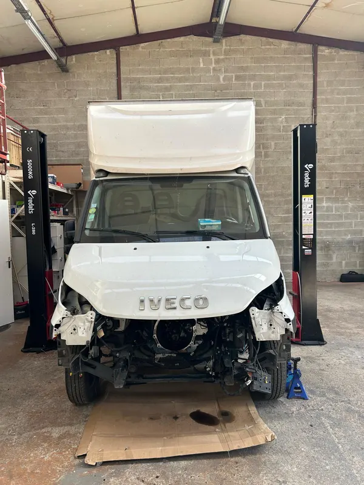
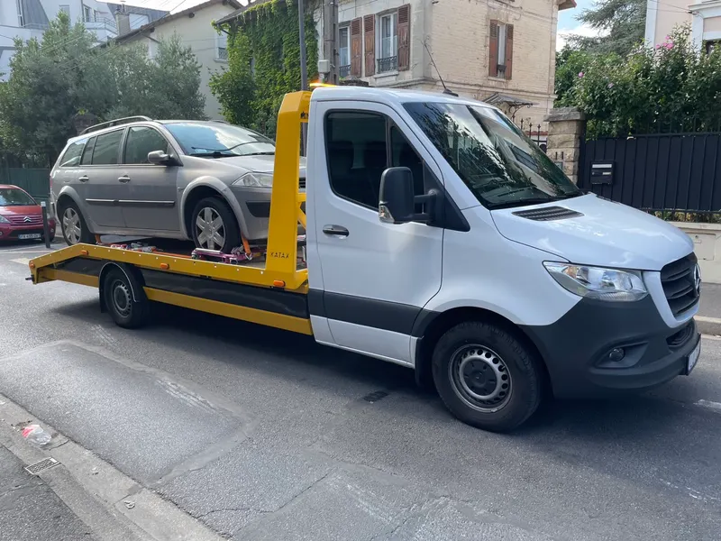
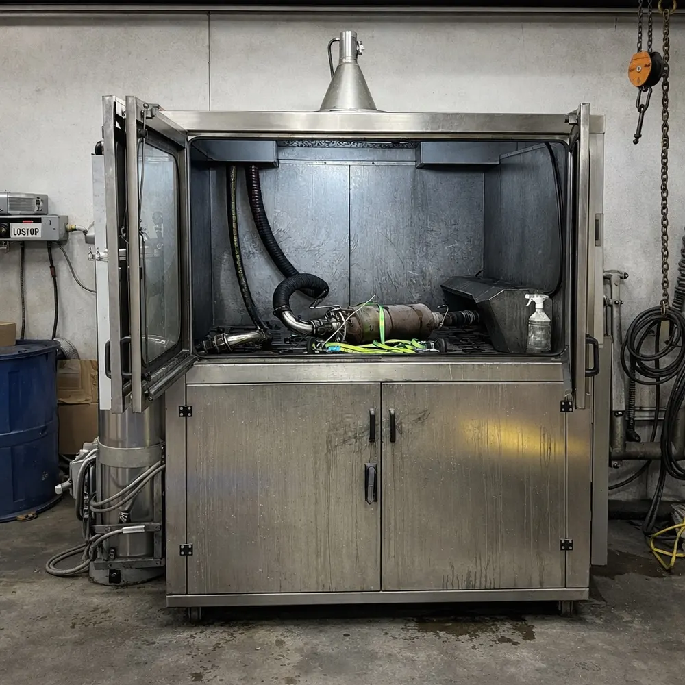
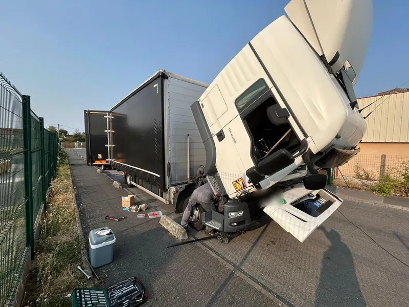
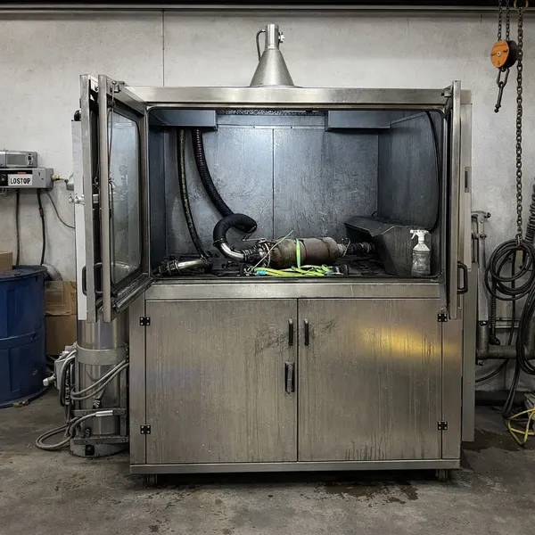

Bâchésplandeka
Notre spécialité. Les bâchés -3,5 t du transport international, en Europe on les appelle « plandeka ».
Bâchés, frigos, châssis-cabine de moins de 3,5 t : on connaît les véhicules du transport international. Vous appelez, on trouve la panne, vous repartez.
« Prise en charge rapide, réparation efficace et prix très compétitifs. » Sonexs, avis Google

Des utilitaires qui roulent toute la semaine en France et dans toute l’Europe, et qui ne peuvent pas rester immobilisés.
Notre spécialité. Les bâchés -3,5 t du transport international, en Europe on les appelle « plandeka ».

Un frigo à l’arrêt, c’est une marchandise qui attend. On s’occupe de la mécanique pour que vous repartiez vite.

Plateaux, caisses, carrosseries spéciales : toutes les bases châssis-cabine utilisées dans le transport.
Toutes marques : Renault Master, Iveco Daily, Mercedes Sprinter, Fiat Ducato, VW Crafter, Ford Transit, Peugeot Boxer, Citroën Jumper…
Les pannes du transport passent en priorité, pour que votre véhicule reste le moins longtemps possible à l’arrêt.
Valise de diagnostic pour trouver l’origine de la panne : voyant moteur, perte de puissance, mode dégradé.
Nettoyage du filtre à particules sur machine professionnelle. Souvent bien moins cher qu’un filtre neuf.
Le nettoyage FAP en détailEmbrayage, freins, moteur, échappement, train avant, suspension, vidange et filtres.
Réglage du parallélisme pour une bonne tenue de route et moins d’usure des pneus, même chargé.
On sait qu’un utilitaire à l’arrêt, c’est une livraison perdue. Appelez-nous ou écrivez sur WhatsApp, en français ou en polonais.
Avis laissés sur Google par nos clients, la plupart en polonais.
« Je suis venu avec mon Renault Master pour le remplacement du tuyau d’échappement du turbo. Excellente communication, approche ciblée et surtout un travail honnête, sans frais supplémentaires inutiles. Il est clair qu’ils savent ce qu’ils font. Mon Master fonctionne parfaitement. Je reviendrai sans hésiter. Je recommande vivement ! »
« Atelier et équipe très compétents. Accueil chaleureux et service personnalisé. Travail réalisé rapidement, excellente qualité, prix raisonnable. Emplacement pratique juste après la sortie d’autoroute. »
« Un atelier que je recommande vivement. Je suis arrivée à 19h et ils ont terminé à 21h. Respect. »
« Je recommande vivement ! Prise en charge rapide, réparation efficace et prix très compétitifs. Service professionnel et entière satisfaction. »
« Service professionnel et rapide. Personnel compétent et très poli. Espace de repos et sanitaires à disposition. Fortement recommandé ! »

Perte de puissance, voyant allumé, mode dégradé : sur un diesel qui roule beaucoup, le FAP finit par s’encrasser. Un filtre neuf coûte cher, un nettoyage professionnel suffit souvent.


22 Av. de l’Épi, 77540 Rozay-en-Brie
Lundi – samedi, 9h – 18h
Français, polonais